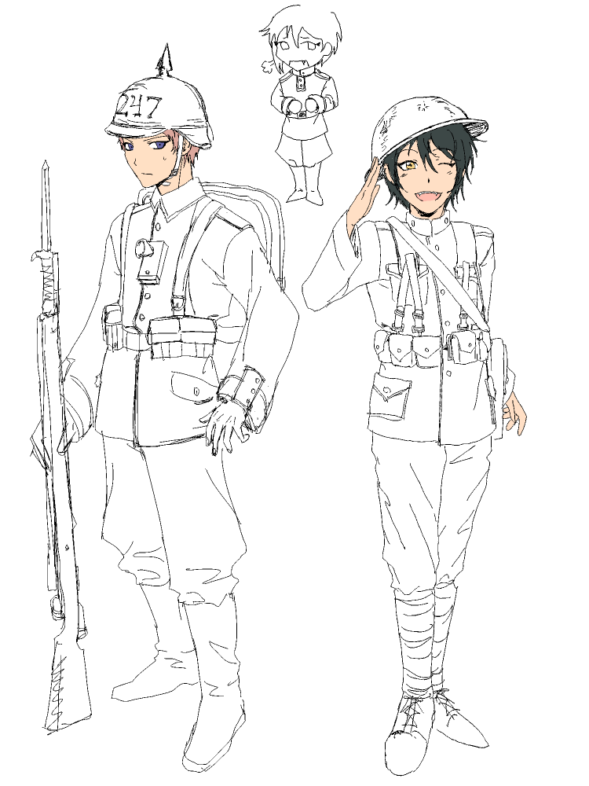
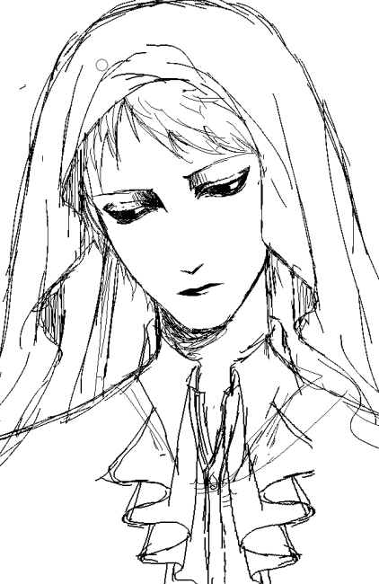
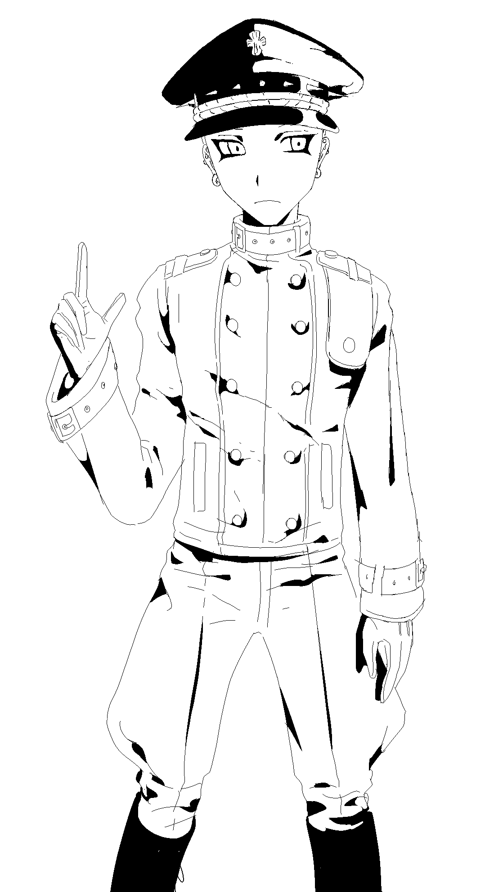
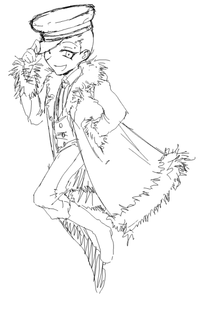
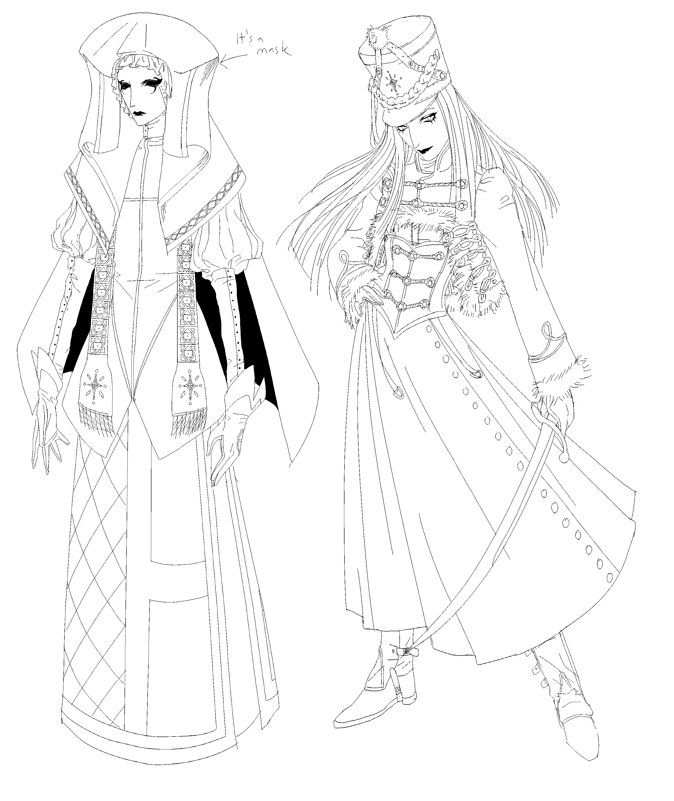
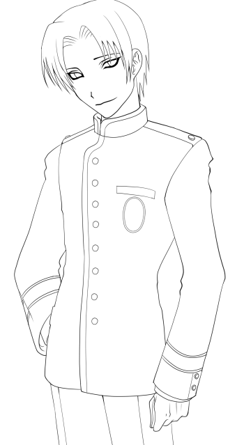
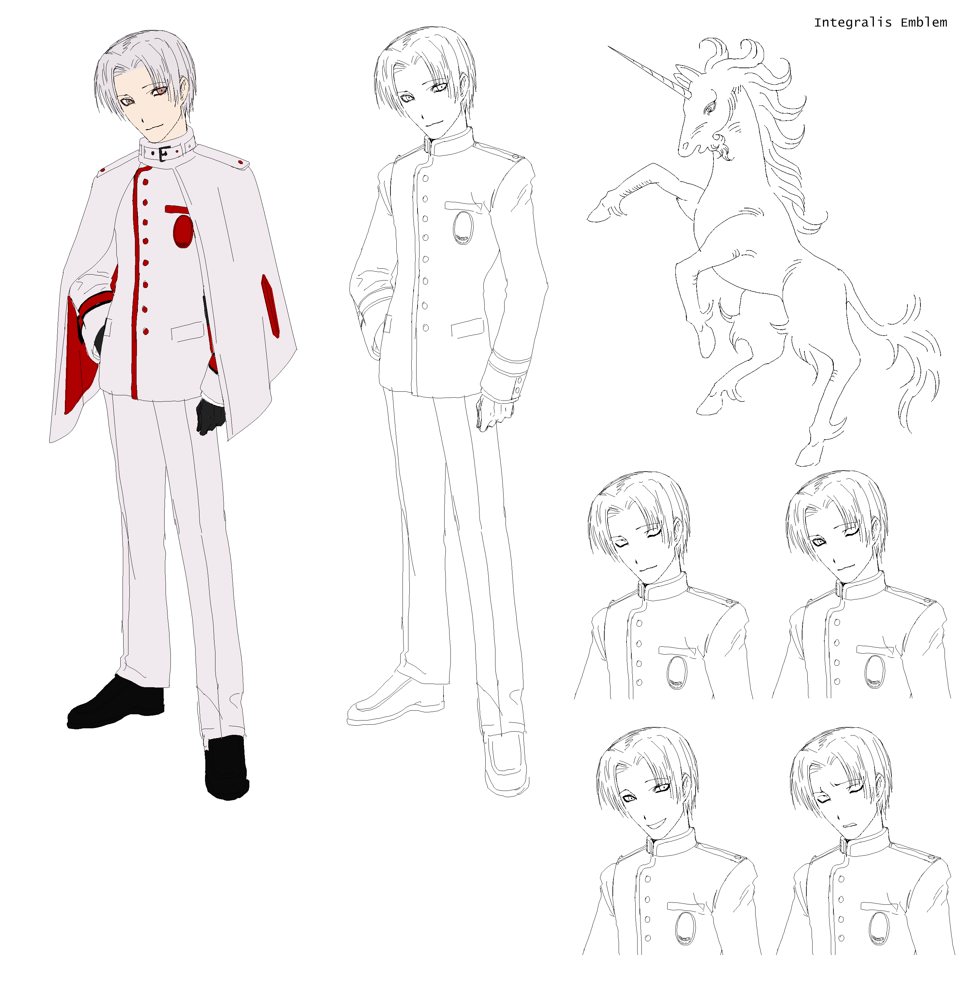

Ensemble Stars stuff that are kind of old but I don't know where to shove. I was going through my old reference drawings for Sid and Neenz' first designs and didn't realize how weird and sketchy they look. I like to be really precise about my lineart except for reference sheets for some reason, where being clean should probably matter most. I think I'll redraw them soon... Also, I have been revisting some death-industrial and noise bands + more Dominick Fernow/Hospital Productions stuff. "Bermuda Drain" and "Cocaine Death" are Dominick's notable releases as Prurient, but I think that "Annihilationist," "The Black Post Society," "Adam Tied to Stone," and "Answer to God" are really stand-out to me for their subtlety. Almost trance-like listening experience; the same goes for his other (quite underrated) project called Sierra Leone Anger. Also poking Muslimgauze's discography again, and I can see for certain now how much his discography influenced Dom's work in Vatican Shadow. Amazing that the entire Muslimgauze discography is done with analog equipment. I've also been revisting Anenzephalia and Brighter Death Now's discography, which I think are more "soothing" in comparison to other bands like Genocide Organ, Folkstorm, The Grey Wolves, etc. White noise freaks me out, but for some reason death-industrial helps me sleep. Everything from Cold Meat Industries, Hospital Productions, and Tesco Distribution are great stuff...


Håkan wearing my clothes in the 1st pic, and him wearing another outfit in the 2nd pic. H.naoto and Alice and the Pirates FTW. Anyways, I was being badgered by my professors to submit for the "Best European Studies Essay Award" so I submit some random crap 'coz they said it'd be good for my CV and stuff. I ended up winning "Best European Studies Student" instead, which was really surprising. My professor "embarrassed" me big time /pos by giving a speech saying that when I was in his class, I was so apologetic I would "destroy the classroom..." ToT. I was happy because I always have the underlying assumption I'm kind of dumb, so I was surprised that he said that it was a really easy decision and that multiple professors throughout the department vouched for me. Hoping to keep improving *_*b Idk just some guy I drew really quickly during my German class lole

Moar characters :33333c These are for unit00's oc project!


Character I made for a visual novel our video game development club is working on... To be honest I didn't really know what to do so I subconsciously ended up making a white-haired Archangel. I guess he lives in my mind forever. Christine doodle from last month I think...